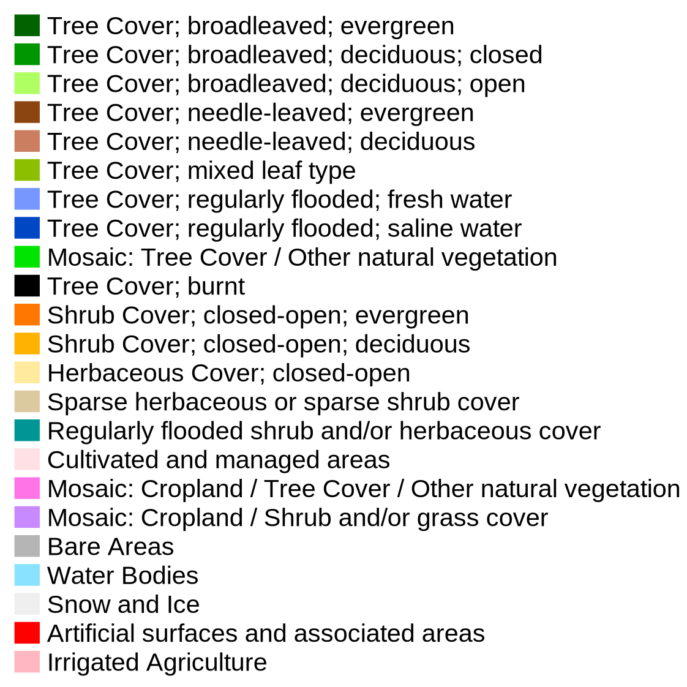
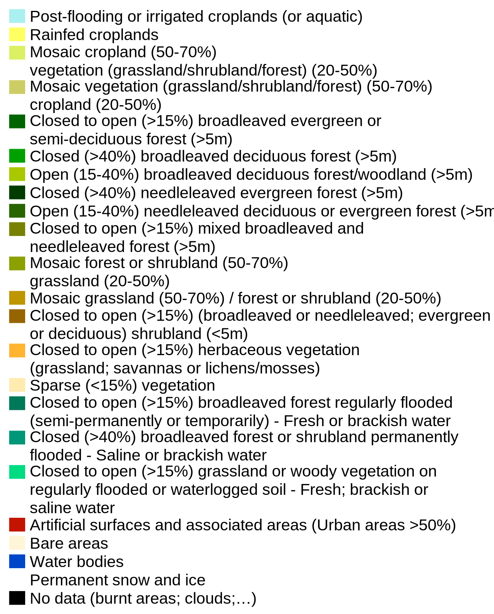
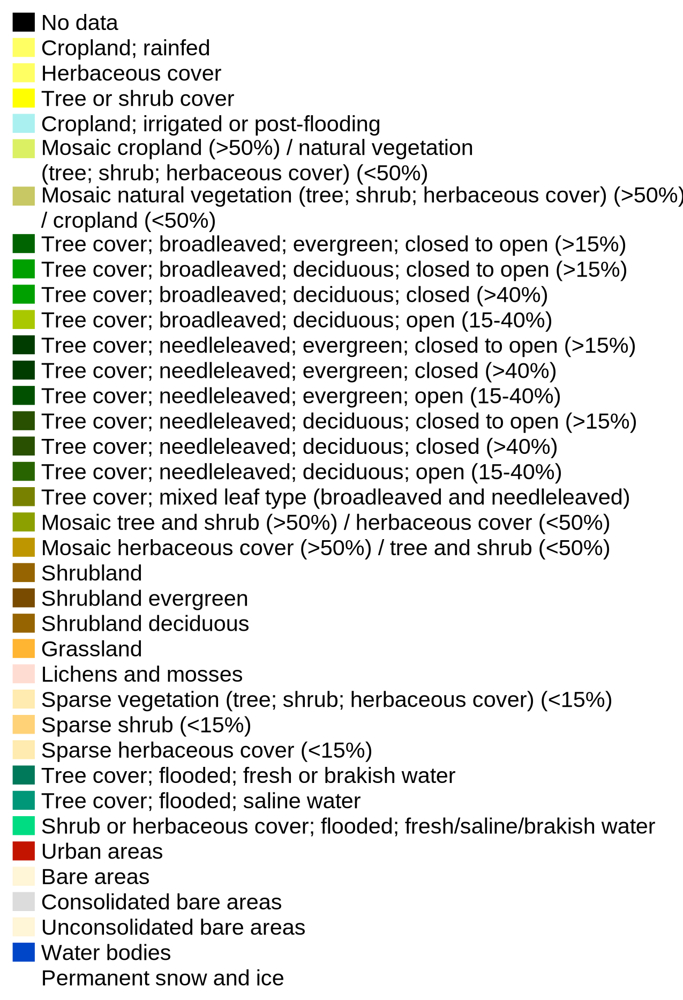
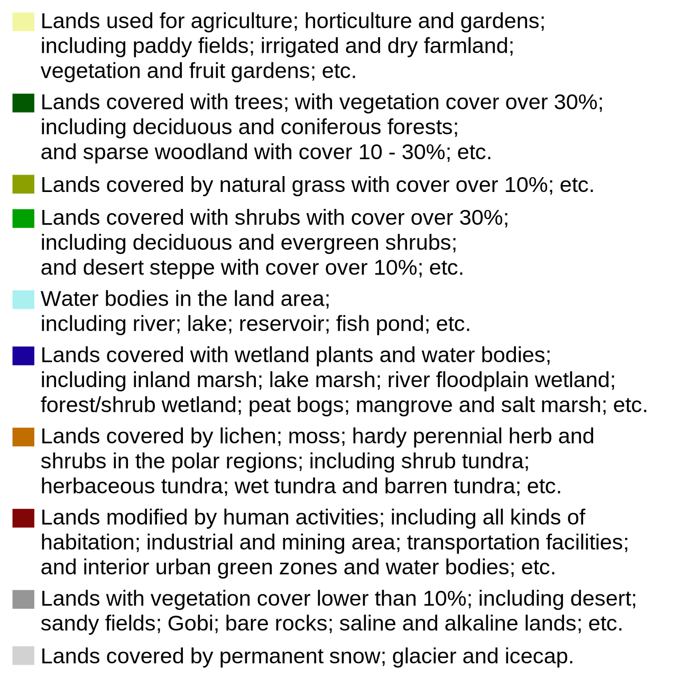
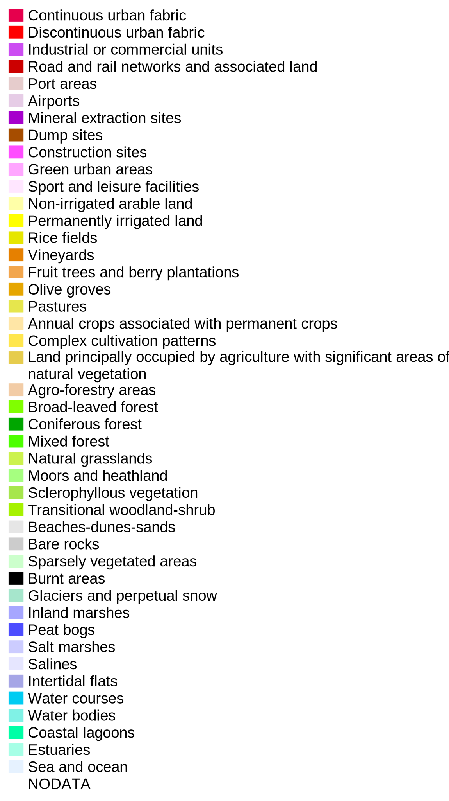
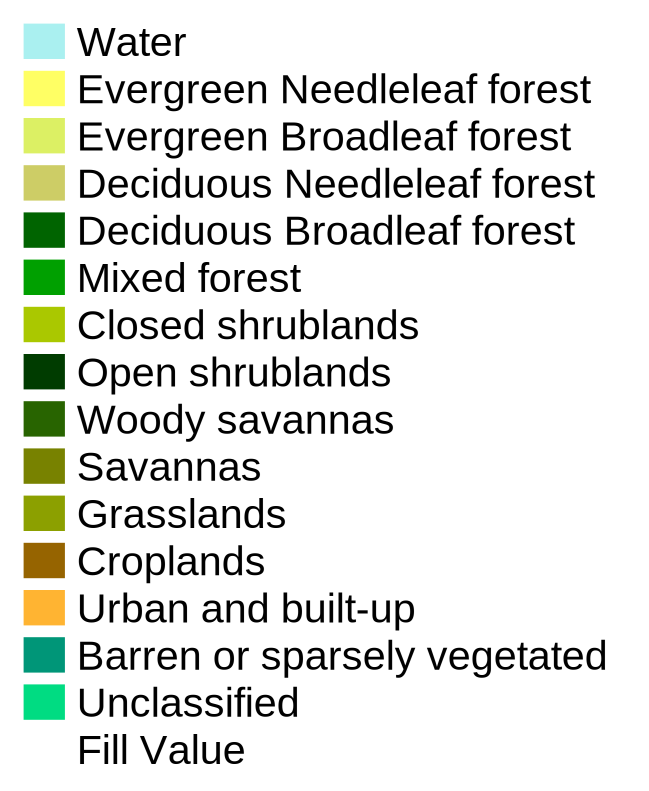

Administrative Layers
Land Cover Layers
Photo Services
External WMS Layers
Opacity:

Opacity:

Opacity:

Opacity:

Opacity:


Opacity:

Opacity:

| Name | Global Land Cover (2000) |
| Institution | EC-JRC |
| Temporal coverage | 2000 |
| Spatial Coverage | Global |
| Sensor | SPOT 4 |
| Input Data | 4 Spectral Bands. Monthly to 3 monthly NDVI composites |
| Spatial Resolution | 1 km |
| Native Coordinate System | Geographic coordinates - Datum WGS84 |
| Classification Technique | Generally unsupervised classification |
| Classification Scheme | FAO LCCS (23 classes) |
| Validation | Statistical sampling |
| Accuracy | Overall accuracy of 68 %. The accuracy of the European sub product was not yet performed |
| Use policy | Free of charge for non-commercial use |
| Name | GlobCover |
| Institution | ESA |
| Temporal coverage | 2004-2006 and 2009 |
| Spatial Coverage | Global |
| Sensor | ENVISAT |
| Input Data | 13 Spectral Bands. Bi-monthly from 10 day composites |
| Spatial Resolution | 300 m |
| Native Coordinate System | Plate-Carrée with a Geographic Lat/Lon representation |
| Classification Technique | Flexible classification using local/regional expertise |
| Classification Scheme | FAO LCCS (23 classes) |
| Validation | Statistical sampling / Expert’s judgement |
| Accuracy | Kappa coefficient of 0.656 |
| Use policy | Free access for educational and/or scientific purposes |
| Name | Land Cover CCI |
| Institution | ESA / UCL-Geomatics |
| Temporal coverage | 5-year epochs centered on 2000, 2005 and 2010 |
| Spatial Coverage | Global |
| Sensor | AVHRR, SPOT-VGT, MERIS FR and RR |
| Input Data | 13 of 15 MERIS spectral channels. 7-day compositing period |
| Spatial Resolution | 300 m |
| Native Coordinate System | Plate-Carrée with a Geographic Lat/Lon representation |
| Classification Technique | Unsupervised classification chain + machine learning classification |
| Classification Scheme | UN LCCS (22 classes) |
| Validation | Statistical sampling / Expert’s judgement |
| Accuracy | Overall accuracy between 73.2 % and 74.1 % |
| Use policy | Free access for educational and/or scientific purposes |
| Name | GlobeLand30 |
| Institution | NGCC |
| Temporal coverage | 12000 and 2010 |
| Spatial Coverage | Global |
| Sensor | Landsat (TM, ETM+), HJ-1 |
| Input Data | Multispectral images + Ancillary documents |
| Spatial Resolution | 30 m |
| Native Coordinate System | UTM WGS84 (multiple zones) |
| Classification Technique | Pixel-object-knowledge (POK) based classification approach |
| Classification Scheme | 10 land cover types |
| Validation | Third-party experts with a two-rank sampling strategy. Confusion Matrix and Derived Indexes for Italy region |
| Accuracy | Overall accuracy of 80.33 % and Kappa coefficient of 0.75 (2010). In Italy, the overall accuracy vary between 81% and 92% (compared to 5 Corine LC classes) and between 62% and 81% (compared to Corine LC subclasses) |
| Use policy | Information not available |
| Name | Corine |
| Institution | EEA |
| Temporal coverage | 1990, 2000, 2006 and 2012 |
| Spatial Coverage | Europe |
| Sensor | Landsat-5 MSS/TM (1990), Landsat-7 ETM (2000), SPOT-4/5 and IRS P6 LISS III (2006) and IRS P6 LISS III and RapIDEye (2012) |
| Input Data | False-colour images + Ancillary documents |
| Spatial Resolution | 250 and 100 m |
| Native Coordinate System | ETRS89 / ETRS-LAEA (EPSG:3035) |
| Classification Technique | Computer-aIDed interpretation methodology |
| Classification Scheme | 1st level: 5 classes; 2nd level: 15 classes; 3th level: 44 classes |
| Validation | Statistical sampling |
| Accuracy | CLC 2000: Average accuracy of 74.8 %; CLC 2006: Not checked; Land Cover Change 2000-2006: overall accuracy of 87.82% |
| Use policy | Re-use of content on the EEA website for commercial or non-commercial purposes is permitted free of charge, provIDed that the source is acknowledged |
| Name | Urban Atlas |
| Institution | European Commission Directorate-General for Regional Policy and the Directorate-General for Enterprise and Industry with the support of the European Space Agency and the European Environment Agency |
| Temporal coverage | 2005-2007 |
| Spatial Coverage | Main cities of Europe (> 100.000 inhabitants) |
| Sensor | Earth Observation (EO) data with 2.5 m spatial resolution multispectral or pan-sharpened (multispectral merged with panchromatic) data |
| Input Data | Earth Observation (EO) data<br>Topographic Maps at a scale of 1: 50 000 or larger<br>COTS navigation data for the road network<br>Ancillary data: COTS navigation data: points of interest, land use, land cover, water areas; Google Earth (only for interpretation, not for delineation); Local city maps; Local zoning data; Field check (on-site visit); Very high resolution imagery (better than 1 m ground resolution, e.g. aerial photographs) |
| Spatial Resolution | - |
| Native Coordinate System | ETRS89 / ETRS-LAEA (EPSG:3035) |
| Classification Technique | ... |
| Classification Scheme | Thematic classes based on CORINE LC nomenclature and GUS Legend |
| Accuracy | Minimum overall accuracy for level 1 class 1 “Artificial surfaces”: 85%<br>Minimum overall accuracy (all classes): 80%<br>Positional Accuracy: + / - 5 m |
| Use policy | Unless otherwise indicated, re-use of content on the EEA website for commercial or non-commercial purposes is permitted free of charge, provIDed that the source is acknowledged |
| Name | MODIS |
| Institution | USGS |
| Temporal coverage | 2001-2012 |
| Spatial Coverage | Global |
| Sensor | Terra MODIS |
| Input Data | 7 Spectral Bands |
| Spatial Resolution | 500 m |
| Native Coordinate System | SinusoIDal |
| Classification Technique | Supervised decision-tree classifier, neural networks |
| Classification Scheme | MODIS land IGBP (20 classes) |
| Validation | Statistical sampling / Confusion matrices, confIDence values |
| Accuracy | Overall accuracy of 74.80 % |
| Use policy | No restrictions on subsequent use, sale, or redistribution |